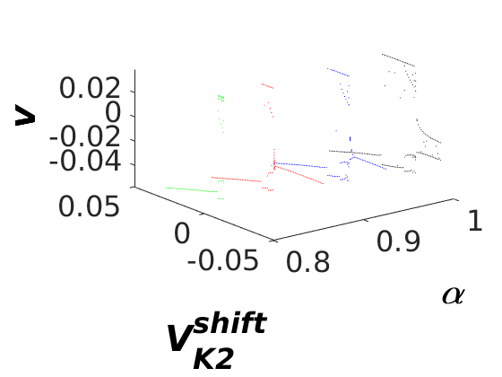
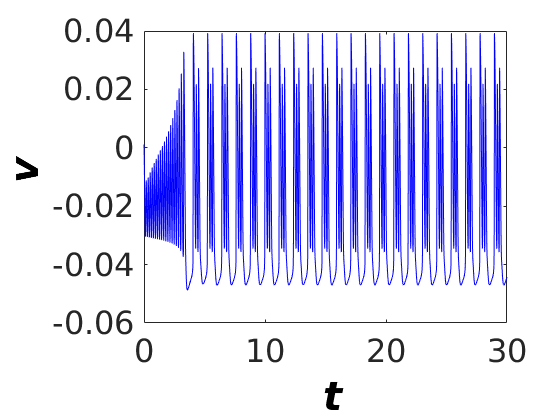
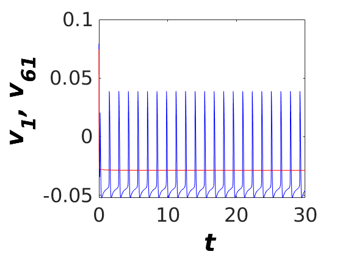
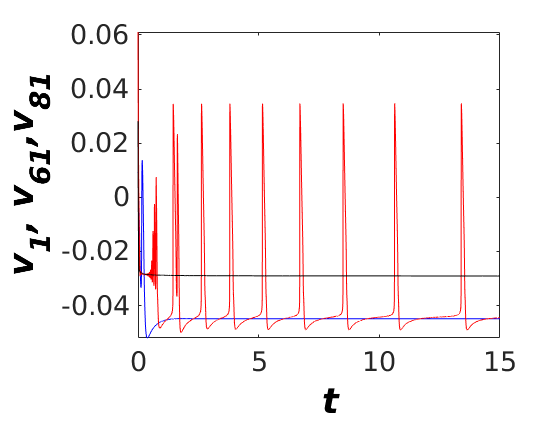
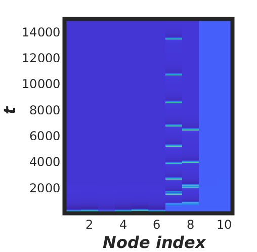

This is the MATLAB code associated with the paper:
Ghosh S, Mondal A, Ji P, Mishra A, Dana SK, Antonopoulos CG, Hens C (2020) Emergence of Mixed Mode Oscillations in Random Networks of Diverse Excitable Neurons: The Role of Neighbors and Electrical Coupling Frontiers in Computational Neuroscience 14:49 http://dx.doi.org/10.3389/fncom.2020.00049
This code was written by S Ghosh and contributed by A Mondal. The following files will generate the images displayed (ran in MATLAB R2020A):
Three_dim_bif_LH.m:
Three dimensional bifurcation code of Leech's heart interneuron model (See fig.1 in the manuscript). (takes a few minutes to run)

leech_fractional_time.m:
Fractional code for time series (See fig.2 in the manuscript) of Leech's heart interneuron model. (takes a few seconds to run)

Network_LH_2_populations.m:
This is the network code for two incommensurate fractional order L-H model (See fig.4 in the manuscript) (takes 16 minutes to run)

Network_LH_3_populations.m:
This is the network code for three incommensurate fractional order L-H model (See fig.5 in the manuscript) (takes a second to run)

